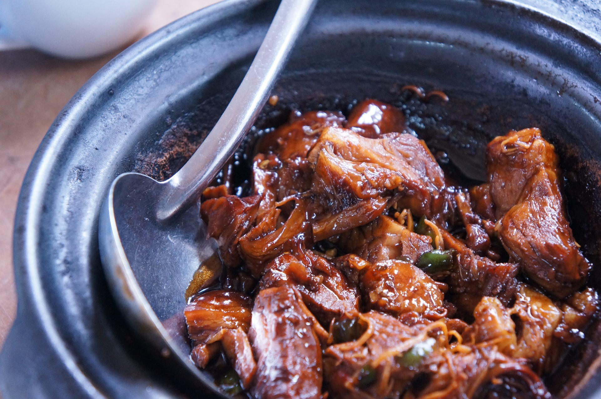

Pulled Pork Recipe

Description
The classic pulled pork is an excellent choice for your BBQ cravings. It is a delicious and generous meat that provides a great sweet and salty combination. Try out this awesome recipe!
Ingredients
- 1 onion, finely chopped
- 3/4 c. ketchup
- 3 tbsp. tomato paste
- 1/4 c. apple cider vinegar
- 1 tsp. paprika
- 1 tsp. garlic powder
- 1 tsp. mustard powder
- 1 tsp. cumin
- 1 (3- to 4-lb.) pork shoulder, trimmed of excess fat
- Freshly ground black pepper
- Coleslaw, for serving
- Buns, for serving
- Kosher salt
Steps
- Combine onion, ketchup, tomato paste, apple cider vinegar and spices in the bowl of a slow cooker.
- Season pork shoulder all over with salt and pepper then add to slow cooker, covering it with ketchup mixture.
- Cover and cook until very tender (the meat should fall apart easily with a fork!), on HIGH for 5 to 6 hours or on LOW for 8 to 10 hours.
- Remove pork from slow cooker and transfer to bowl.
- Shred with two forks and toss with juices from the slow cooker.
- Serve on buns with coleslaw.